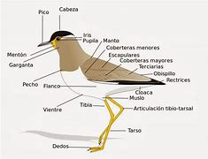
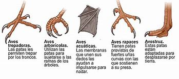
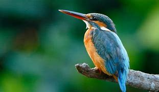
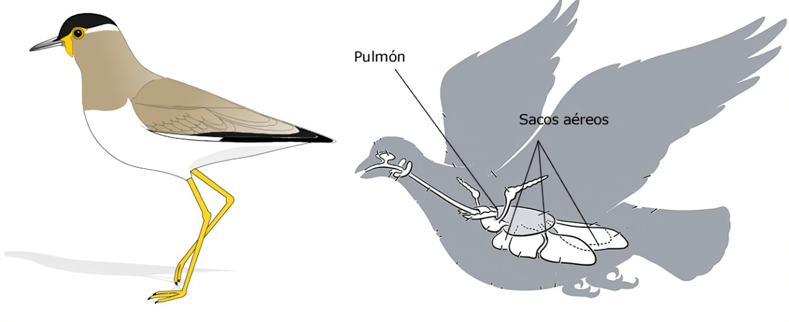
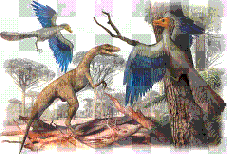
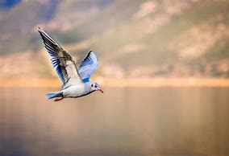
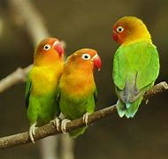
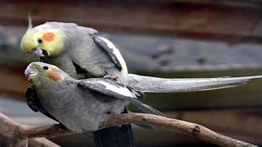
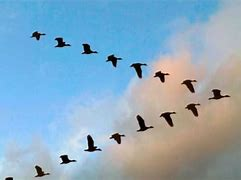

PRINCIPIOS
Argentina, un país con un extenso territorio y con gran variedad de climas, presenta una gran variedad de aves.
Algunas se refugian en la frondosidad de la selva y el chaco, otras en los esteros, bañados y lagunas, ciertos ejemplares buscan las costas oceánicas o las aguas heladas, otros las altas montañas y otros que habitan en las extensas llanuras.
Esto se debe a que la extensa geografía se traduce en 18 ecorregiones y es por esta razón que el país goza de unbr capital natural que contribuye significativamente a la diversidad global.
CARACTERÍSTICAS MINIMAS DE LAS AVES
Te invitamos a conocer todas las caracteristicas de las aves estos animales vertebrados que nos han sorprendido desde su aparición por su vuelo y su llamativo aspecto, sin olvidar su canto tan peculiar.
A la vez, te sugerimos leer sobre la elección de pareja del águila real.
Lo primero que podemos señalar entre las caracteristicas de las aves es que estos animales a diferencia de los mamíferos no tienen glándulas sudoríparas ni sabáceas, tienen toda la piel recubierta por plumas y como no sudan, lo que hacen para bajar su temperatura corporal es jadear.
Ambas alas de un ave son iguales y estas son las extremidades delanteras o anteriores las cuales evolucionaron de tal modo para permitirles volar.
Las aves tienen un pico córneo que no tiene dientes y su respiración es pulmonar, de igual manera tienen un aparato respiratorio eficaz con los pulmones bien desarrollados, son animales vertebrados o con una columna vertebral y tienen glóbulos rojos o eritrocitos en su sangre.
Los sonidos o el canto de cada ave se produce gracias a un órgano que tiene como parte integrante de su sistema respiratorio, el cual se llama siringe. Las aves tienen una reproducción ovípara, su aparato reproductor carece de órganos sexuales externos y la fecundación se da internamente.
El metabolismo de las aves y la digestión de las misma es muy acelerado esto como parte de la adaptación al vuelo.
CARACTERÍSTICAS GENERALES DE LAS AVES
 Entre tantas caracteristicas de las aves algo que tienen en común todas las especies es que todas tienen plumas las cuales cumplen con dos funciones es decir, la de volar y por otra parte, poder regular su temperatura.
Las plumas como son livianas o ligeras pero muy resistentes le permiten a las aves planear así como aprovechar el aire, lo mismo que facilitarles la retención de calor producido por el cuerpo a pesar del paso de aire entre las mismas.
Otras caracteristicas de las aves tienen que ver con su peso, toda ave es ligera para poder volar.
El peso ligero de las aves se debe más que nada a la estructura de sus huesos que son llamados huesos neumáticos por ser huecos por dentro.
Este es el motivo por el que el peso de tales estructuras óseas sea mínimo.
Los huesos huecos de las aves también contribuyen a la autorregulación térmica del animal porque permiten el enfriamiento ante temperaturas súper cálidas valiéndose de la retención y de la expulsión de aire.
Otros aspectos que afectan directamente el peso mínimo de las aves voladoras es la carencia de los dientes y de la vejiga, además del hecho de que las hembras cuentan con nada más un ovario.
Te sugerimos que aprendas sobre los patos domesticos y sus diferentes razas Así mismo, entre las caracteristicas de las aves cabe mencionar en cuanto al comportamiento que todas para poder facilitar sus funciones alimenticias y reproductivas desarrollan diversos comportamientos que les permiten usar los recursos disponibles a su alcance, por ejemplo, la carencia de dientes que se contrarresta con la potencia de la molleja.
No mantienen un tamaño estándar
Presenta una variedad de tamaños que va desde el colibrí, llegando a medir unos 5 cm de longitud. Hasta el avestruz que miden 2 metros de largo.
Locomoción
 Algunas poseen alas reducidas por la evolución y no presentan la “quilla” un hueso en el esternón donde se unen las costillas.
Los que no le permite la ventaja para volar, por lo general tienen patas largas y fuertes para movilizarse a través de la tierra.
Otras si presentan el esternón que posee la forma de quilla necesaria, permitiendo así adaptar a su vez músculos fuertes, flexibles y ligeros en las extremidades superiores (alas). Dándole la ventaja de volar.
Temperatura corporal
 Las aves en general poseen un temperatura promedio de 40°C.
Y para lograr mantener su temperatura constante se valen de la ventilación a través de la respiración y su plumaje. Las aves no poseen glándulas sudoríparas.
Respiración de las aves
 La estructura del pulmón es más compleja, distinta a las de otras especies.
Esta en relación con los sacos aéreos, en ellos hay aire. Estos se encuentran ubicados en la zona posterior y anterior del ave, y se dilatan y comprimen con cada respiración. Están situados en la parte anterior y posterior.
El aire de los sacos aéreos anteriores se vacía directamente en la tráquea y es expulsado por la boca o las fosas nasales.
Los sacos aéreos posteriores se vacían en los pulmones. Gracias a esto el aire puede circular a través de los sacos aéreos.
Estos sacos no juegan un papel importante en el intercambio de gases, pero almacena aire y actúan como fuelles. Permitiendo a los pulmones mantener un volumen fijo de aire constantemente fluyendo en su interior.
Los pulmones de las aves no tienen alvéolos, pero en su lugar contienen millones de pequeños pasajes conocidos como parabronquios.
Evolución
 Si bien hay diversas teorías respecto al origen de las aves , la de mayor aceptación apunta a que provienen directamente de los dinosaurios, siendo el grupo animal existente más cercano a los deinonicosaurios, que junto a los dromeosáuridos y troodóntidos constituyen el grupo de las paraaves.
En la formulación de estas teorías evolutivas fue clave el hallazgo del fósil de Archaeopteryx de Berlín, un dinosaurio del jurásico superior cuyo cuerpo envuelto de plumas estaba torcido en una manera muy similar a las observables en los cadáveres de aves modernas.
Aun así, se sostiene que el ancestro aviar más plausible descubierto sea el Avimimus de finales del período cretácico.
Vuelo
 Si bien no todas las especies de aves pueden volar (los pingüinos nadan, por ejemplo, y los avestruces corren), es uno de los rasgos distintivos de esta clase de animales, ya que la capacidad de desplazarse de un ecosistema a otro e incluso de proliferar en territorios aislados sin mayor competencia animal, permitió la enorme diversificación de las especies aviares.
Por otro lado, la facultad del vuelo impulsó la mayoría de los cambios evolutivos presentes en el cuerpo aerodinámico de las aves, desde potentes músculos pectorales que acompañan la transformación de los miembros anteriores en alas, hasta el desarrollo de huesos huecos, ligeros, en conexión con el poderoso sistema respiratorio, de los más complejos del reino animal.
El aire de la respiración de las aves se reparte entre los pulmones y las diversas cavidades óseas, para así mantener el metabolismo hiperoxigenado y poder remontar el vuelo durante períodos extensos.
Alimentación
La dieta de las aves puede ser sumamente variada, oscilando entre néctar, frutas y vegetales, hojas y semillas, insectos, hongos, carroña y animales pequeños: peces, roedores, reptiles e incluso otras aves o sus huevos.
La enorme diversidad aviar les ha permitido, además, adaptar sus picos a su fuente nutricional dilecta, rasgo sumamente evidente en especies como el carpintero, el pelícano o el colibrí.
Sus necesidades nutricionales, de cara al vuelo, son altas, así que han desarrollado un rápido modelo digestivo.
Sociabilidad
 Muchas aves prefieren una existencia solitaria o de núcleos familiares pequeños, sobre todo las dedicadas a la depredación.
Mientras que la mayoría de las aves pequeñas se organiza en bandadas que pueden alcanzar proporciones importantes.
Dada su alta capacidad de pensamiento inteligente, las aves son capaces de modos de socialización eficientes, en cuanto a comida y seguridad se refiere, y pueden incluso embarcarse en relaciones simbióticas o de comensalismo con miembros de otras especies, como lo hacen las garzas que se alimentan de los parásitos en el pelaje de mamíferos de gran tamaño.
Reproducción
 Las aves son ovíparas, de modo que una vez fecundada durante el coito, la hembra pone huevos provistos de un caparazón calcáreo, que luego son empollados hasta el instante de su eclosión.
El 95% de las especies de pájaros son monógamas, lo cual permite un extenso cuidado biparental hasta echar adelante la nidada.
De esa manera, además, se puede defender el territorio alrededor del nido, garantizando el alimento de los polluelos.
Migraciones
 Muchas de las especies de aves migran, aprovechando la diferencia climática entre ambos hemisferios para optimizar sus fuentes de alimento o para llevar a cabo la temporada de cría.
Algunas de esas migraciones son anuales, para lo cual los animales se preparan maximizando sus reservas de grasa y agua.
Considerando que las aves terrestres tienen un radio máximo de vuelo autónomo de unos 2500 km y las limícolas de unos 4000 km, se entiende que un recorrido total que a menudo supera los 10.000 km sea una inversión energética importante en la vida del ave.
Distribución

Existen alrededor de 9.000 especies de aves, lo cual hace de ellas los vertebrados más numerosos del mundo, bastante por encima de los anfibios y los mamíferos.
Han colonizado todos los hábitats posibles: desérticos, insulares, selváticos, montañosos, marítimos, mediterráneos, polares.
Clasificación zoológica
El grupo taxonómico de las aves se contempla como clase en la sistemática zoológica tradicional, pero no en las clasificaciones modernas, para las cuales se ubica dentro de la superclase de los tetrápodos.
Muchas de estas discrepancias respecto a su clasificación tienen razón de ser en las diversas teorías existentes sobre su origen evolutivo, y las borrosas delimitaciones entre animales aviares y no aviares producto de los sucesivos descubrimientos arqueológicos de las aves primitivas y eslabones intermedios previos a su existencia.
Relación con el hombre
Las aves han fascinado al hombre desde las edades más tempranas. Su capacidad de vuelo ha sido fuente de inspiración de leyendas, como el relato griego de Ícaro, y de invenciones como el parapente y el aeroplano.
Conquistar esa frontera inaccesible del cielo y codearse con las aves ha sido una obsesión humana que apenas el siglo pasado pudo realizarse.
Algunas son tenidas por mensajeros celestiales o emisarios de buenas noticias, mientras que otras, como el buitre o el cuervo son tenidas por malignas o de mal agüero.
El águila y el halcón han inspirado numerosos estandartes imperiales y han formado parte del imaginario occidental desde temprano: los grifos (mitad águila-mitad león), los rocs (aves gigantes) o el mítico ave fénix, capaz de revivir de sus cenizas.
Amenaza
Más de 120 especies de aves se extinguieron desde el siglo XVII y hay más de 1200 especies amenazadas en la actualidad, lo cual apunta a la violenta intromisión del hombre en sus hábitats naturales, a la caza y la captura, debido a lo decorativo de su plumaje y muchas veces a la armonía de su canto.
Las especies aviares están entre las más perjudicadas por los derrames petroleros y otros accidentes ecológicos de alto impacto, por lo que los principales esfuerzos ecológicos del mundo se enfocan en la conservación de estos animales.
Se estima que 16 especies hayan sido salvadas de la extinción entre 1994 y 2004, pero muchas otras no tienen mayor alternativa que la desaparición.